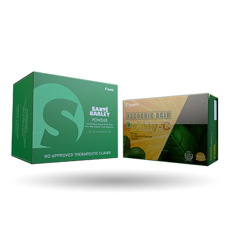

SANTE PURE BARLEY
Santé NutriPair Set
Complete Health Package
The Santé NutriPair Set is a comprehensive health and wellness package that combines two essential
dietary supplements to support overall well-being. This set includes the Santé Barley Daily-C and
the Santé Pure Barley Grass Powder, providing a powerful combination of nutrients designed to boost
immunity, enhance energy levels, and promote optimal health.
The Santé NutriPair Set offers a convenient and effective way to optimize your health and vitality,
providing a synergistic blend of nutrients to support your wellness journey.
₱ 3,120.00
